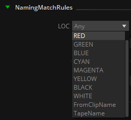
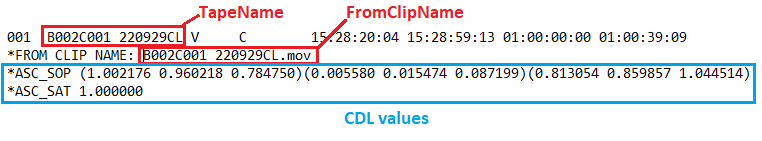
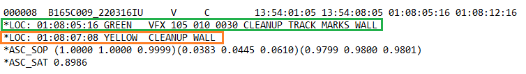
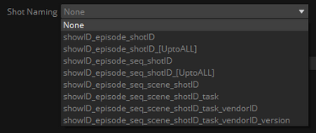
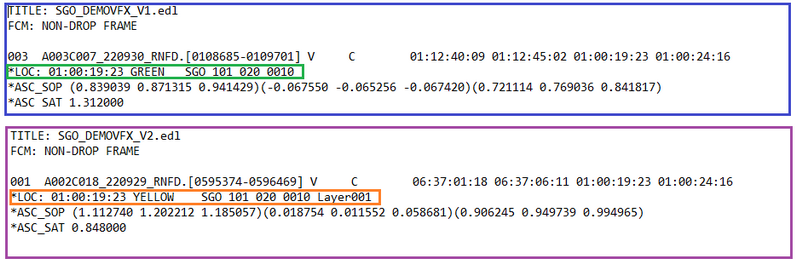
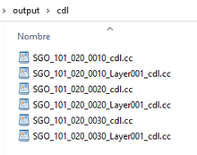
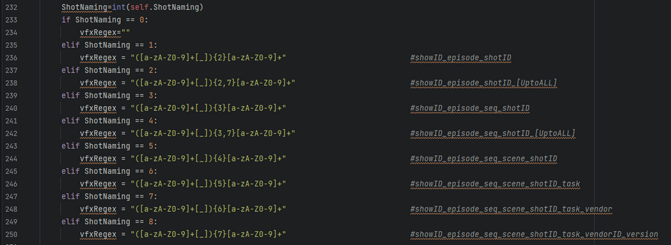

|
<< Click to Display Table of Contents >> EDL to CC |
This node gets one or more EDL files (with .edl extension), extracts the CDL information for each shot and creates a .cc file for each match found.
The name of the .cc file will be extracted based on the locator selected in the LOC pulldown in the NamingMatchRules property of the node, adding the suffix ‘_cdl’ to each one.
Please note that only markers from Avid Media Composer, Adobe Premiere and Mistika are supported.
The LOC options available are as follows:

Any: Last valid color marker found in the .edl event will be used (if no Shot Naming is used to match the expected VFX name, find details below)
RED, GREEN, BLUE, CYAN, MAGENTA, YELLOW, BLACK, WHITE: Only the selected color marker is taken into account.
FromClipName: The name after the “*FROM CLIP NAME” statement in the .edl event will be used.
TapeName: The name found right after the .edl event will be used.


In the provided example, we observe multiple color markers within the EDL event. Specifically, the GREEN marker, from which we intend to extract the VFX name, contains additional comments contributed by the editor ("CLEANUP TRACK MARKS WALL"). To accurately obtain the desired VFX name ("VFX_105_010_0030"), we can incorporate a regular expression for parsing markers within an EDL event.
Within the "Shot Naming" dropdown menu, users can choose from pre-defined VFX naming structures. This enables the selection of appropriate naming conventions.

The provided regular expressions (regEx) are designed to identify patterns with precisely 3, 4, 5, 6, 7, or 8 alphanumeric segments separated by underscores (_). If the goal is to extract a VFX name comprising a minimum of 3 or 4 elements but up to 8, the suitable choice would be the regExs marked as _[UptoALL].
This is useful in the case that we want to process several EDLs in batch, one for each video track. In the main track we may have the VFX name, and in the above tracks the needed assets for that particular VFX, such as layers, background, foreground, cleanplates…
For example, if we found this naming and markers color convention in two different EDL files corresponding to tracks V1 and V2:

In this case we may use the LOC ‘Any’, as the names needed to extract are both in the markers Green and Yellow; and use the ShotNaming ‘showID_episode_seq_shotID_[UptoALL]’,
so it will take into account also the _Layer001 suffix.
Processing both EDLs the output of the node will be as follows:

NOTE: Choosing 'Any' as a locator option without specifying a corresponding regular expression introduces excessive flexibility when parsing EDL events. This situation is likely to result in unpredictable name values when extracting the .cc file names..
Since the Python code for the node is provided, users have the flexibility to customize the regEx as per their specific workflow requirements.

edl: EDL files containing CDL information to be processed.
cc: .cc files for each match found in the edl.
CDLs path: Folder to store the .cc files created by this node (it will create one .cc sidecar file for each clip with CDL information found in the EDL).
NamingMatchRules:
LOC: Locator in the .edl events to extract the .cc file name from: It can be a color marker from Avid Media Composer / Mistika / Adobe Premiere (RED, GREEN, BLUE, CYAN, MAGENTA, YELLOW, BLACK, WHITE), or the TapeName or FromClipName statements in the .edl event.
Shot Naming: A regular expression to match and extract the vfx name in the selected LOC